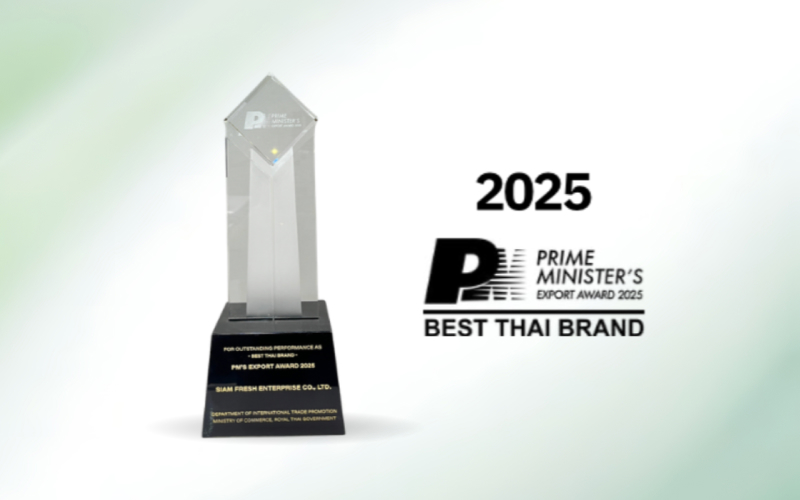
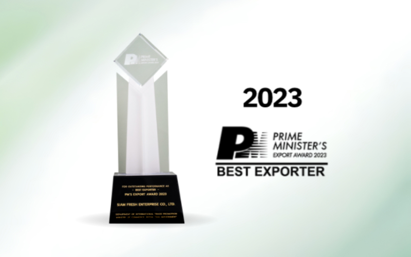
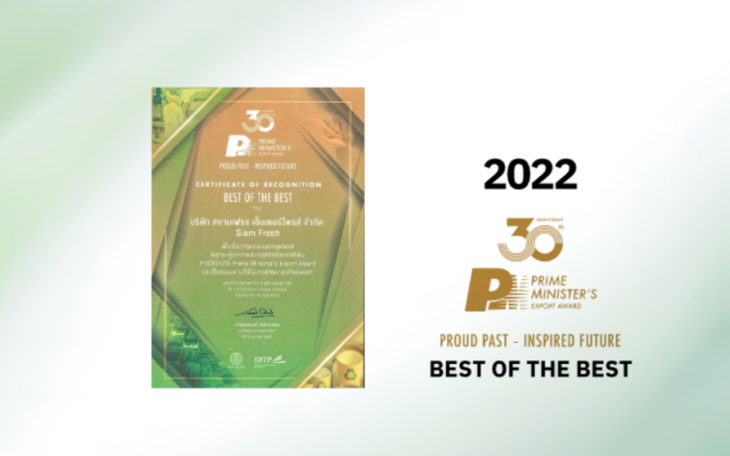
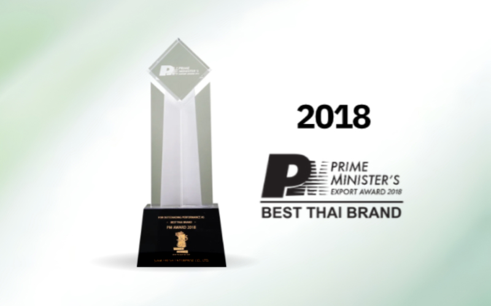
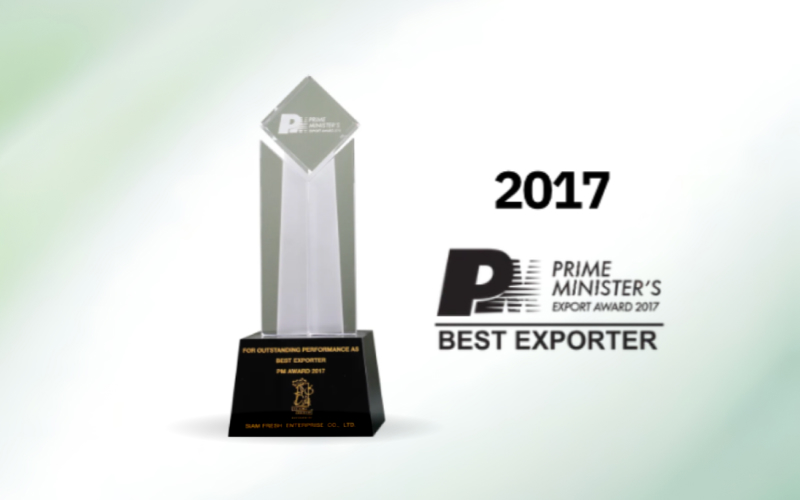

Our Vision
To establish Thai fruits as a world-class premium standard — and to transform the way Thailand's agricultural potential is recognised and valued on the global stage.
About Us
Elevating Thai Fruits Beyond Commodities
Siam Fresh Enterprise was founded on a simple belief: Thailand produces some of the world's finest tropical fruits, and those fruits deserve to be recognised for their true value.
For over 22 years, we have operated where Thailand's agricultural heritage meets the demands of international trade. Where others saw commodities, we saw quality worth fighting for.
By working closely with growers across Thailand's key producing regions, maintaining internationally recognised certifications, and serving buyers across Asia, Europe, and beyond, we have helped reposition Thai tropical fruits as premium products that the world's most discerning markets can rely on.
We believe maintaining standards is not enough. Every year, we refine our processes and deepen our understanding of what global markets truly demand — so our customers can always expect more from us than they did before.
Today, Siam Fresh continues to bridge the gap between Thailand's finest orchards and markets around the world — creating value for our customers, our growers, and the communities behind every harvest.

Trusted export partners across Asia and Europe — with room to grow as our network expands.

To establish Thai fruits as a world-class premium standard — and to transform the way Thailand's agricultural potential is recognised and valued on the global stage.


To deliver fruit of uncompromising quality, build sustainable livelihoods for farmers, and develop supply chains that create lasting value — for our customers, our communities, and the environment.
We are committed to delivering safe, reliable, and premium-quality fruit to customers worldwide. Quality is embedded throughout every stage of our operation — from orchard management and harvesting to packing, storage, and export logistics.
Through internationally recognised certifications, full traceability, and continuous monitoring, we ensure every shipment meets the highest standards of food safety and consistency.
Internationally recognised certifications across every stage of our supply chain.
Continuous monitoring for food safety, traceability, and export compliance.
Enables complete product traceability from orchard to shipment for transparency and accountability.
Regular testing and monitoring to ensure compliance with international residue standards and importing country requirements.
Recognised by leading national institutions for excellence in export performance, entrepreneurship, innovation, and sustainable business growth.








At Siam Fresh, sustainability is integrated into every aspect of our business.
We believe long-term success comes from balancing economic growth, social responsibility, and environmental stewardship. Together with farmers, communities, customers, and partners, we are committed to strengthening the future of Thai agriculture while delivering premium products to global markets.
Promoting responsible farming practices through certified farms, resource management, and continuous improvement.
Supporting farming communities through fair partnerships, knowledge sharing, and long-term opportunities.
Reducing environmental impact through responsible packaging, efficient resource use, and sustainable logistics.
Leveraging technology and traceability systems to improve transparency, efficiency, and customer confidence.
Siam Fresh proudly brings the finest of Thailand to customers worldwide creating lasting value through every harvest, every partnership, and every shipment.
View Our Products